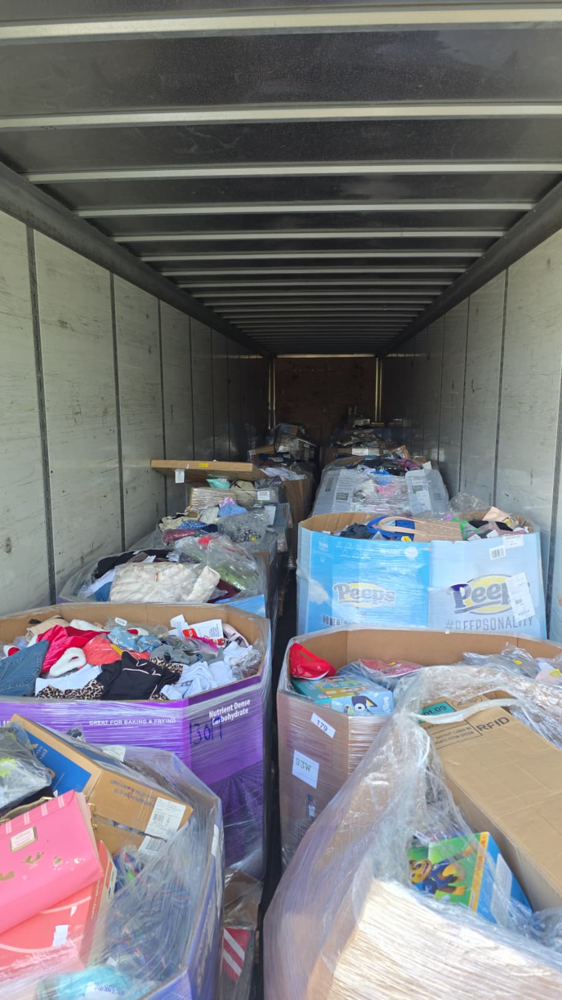

Vea exactamente qué trae la tarima antes de comprar.
Manifiesto real. Devoluciones reales de grandes tiendas. Publicamos el manifiesto en cuanto llega el camión. Recoja en Texas con su propio transportista o cotice flete en EE. UU.
- 📋 Manifiesto real — revise el contenido de la carga antes de pagar.
- ⏱️ Cargas nuevas — no almacenamos, cada camión es nuevo.
- 📍 Recoja en Texas — con su propio transportista, sin sobreprecio de bodega.
Preguntas frecuentes
¿El manifiesto es real, o es genérico?
Real — nuestras cargas se consiguen a través de canales de liquidación de grandes tiendas, así que los manifiestos vienen de los datos reales del listado del minorista, no de una plantilla genérica. Los manifiestos pueden tener un pequeño margen de error, igual que en toda la industria — es estándar.
¿Puedo ver el manifiesto antes de pagar?
Sí — le enviamos el manifiesto para que revise el contenido y el valor estimado de venta al menudeo antes de comprometerse con una carga.
¿Con qué frecuencia tienen cargas nuevas disponibles?
Nos movemos rápido — no almacenamos inventario, así que las cargas rotan en cuestión de un día tras llegar. La disponibilidad depende de lo que esté entrando. Escríbanos por WhatsApp y le decimos qué hay disponible ahora mismo.
¿Dónde recojo la mercancía?
La recolección es en Texas. Le confirmamos la ubicación y la dirección exacta al reservar su carga.
¿Puedo usar mi propio transportista para recoger la carga?
Sí — puede mandar su propio transportista a recoger en Texas. Solo confirme con nosotros la fecha/hora de recolección antes.